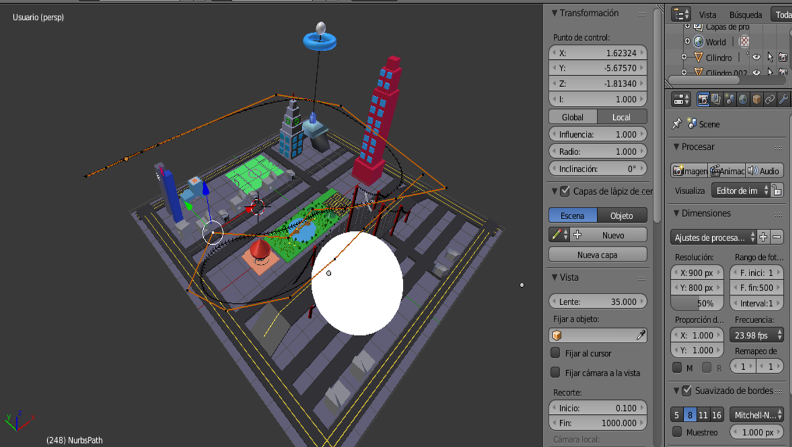
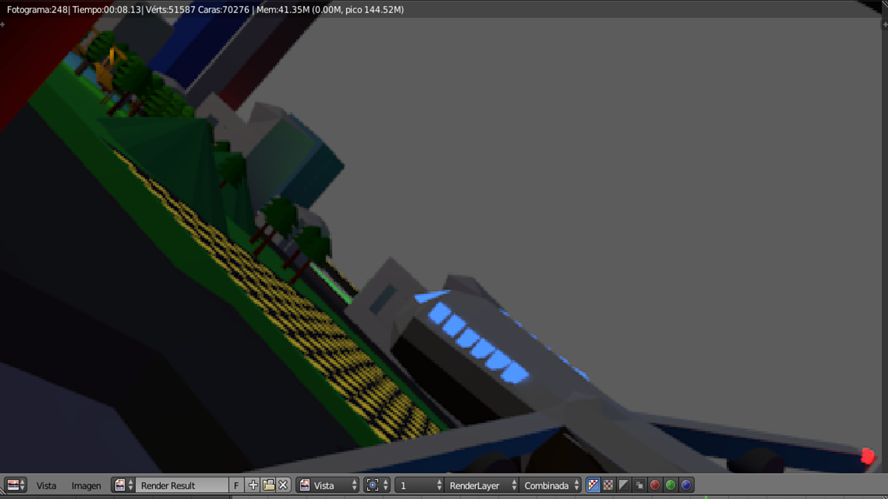
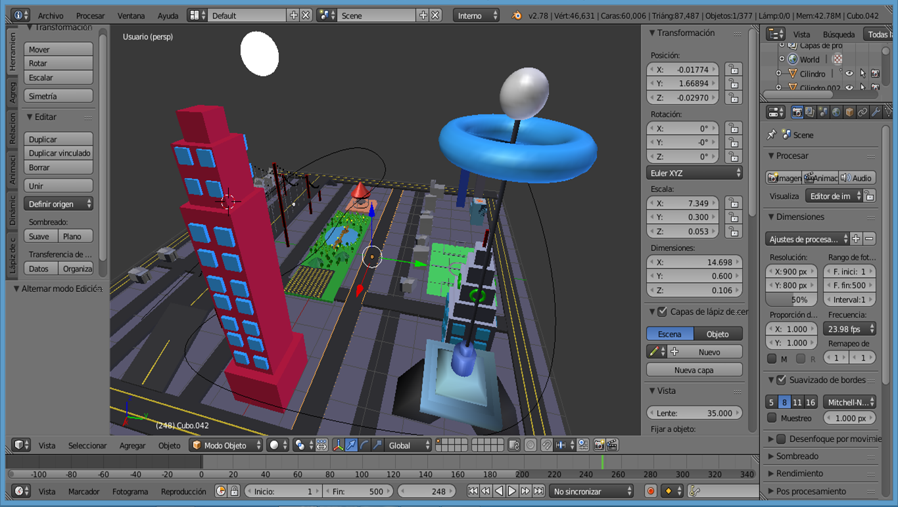

Ciudad en Blender
Blender es una herramienta que nos dio nuestro primer vistazo hacía lo que es el diseño y la arquitectura de los modelos en 3D, para ello utilizamos ciertas cualidades que nos permitían crear figuras tridimensionales y esculpirlas de tal forma que crearamos objetos, y con estos objetos realizar previsualizaciones de como se verían en ciertos angulos.
  Para la elaboración de este ejercicio utilizamos:
- Mallas para la creación de edificios
- Herramientas varias como escalar y expandir para dar forma a los objetos
- Necesitamos el modo edicón para hacer ajustes a nuestros objetos
- Del modo objeto para asignar dimensiones y figuras
- Las herramientas de edición para realizar un video
Opinión personal
Finalizando esta actividad pude comprender un poco lo que conlleva crear desde cero modelos en tercera dimensión, la edición y el gran trabajo que se desarrolla para la vista buena de los demás, como lo sería la previsualización de los objetos a desarrollar o nuevas y grandes ideas para así poder innovar,